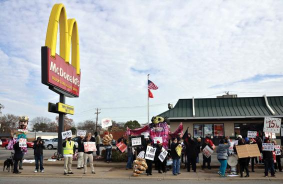
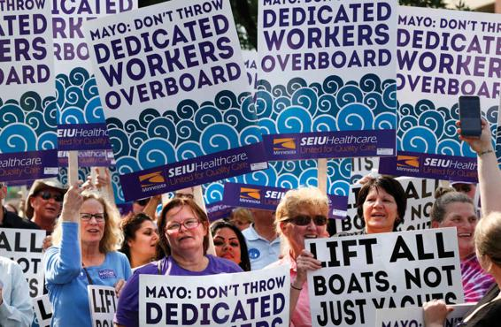

The idea of work is actually a complex one. All of us work in many ways besides in paid employment. Cleaning the house, planting a garden, and going shopping are plainly all work. But for two centuries or more, Western society has been built around the central importance of paid work. The experience of unemployment—being unable to find a job when one wants it—is still a largely negative one. Unemployment clearly brings with it unfortunate effects, including, sometimes, falling into poverty.
An individual’s quality of life depends on their position in the labor market. Arguably this is truer in the United States than in any other comparably developed economy. Americans spend more time at work than do citizens of other advanced industrial countries. U.S. living standards also reflect income and employment-related benefits more directly than do living standards in other comparably developed countries where governments universally guarantee paid vacation, job training, and health insurance. There is also more variability in terms of pay and work conditions in the U.S. labor market than elsewhere. Yet, in spite of the overwhelming importance of the labor market for the life conditions of working Americans, there has been relatively little investigation of how workers view the framework through which the U.S. labor market is governed.
For this reason, Richard Freeman of Harvard University and Joel Rogers of the University of Wisconsin set out to find out what workers want in regard to the conditions under which they labor. Freeman and Rogers (1999) designed the Worker Representation and Participation Survey (WRPS) to canvass workers systematically in a wide variety of professions for their opinions on their employment and how their workplaces could be improved. Freeman and Rogers’s findings are based on a national telephone survey of 2,400 workers in private-sector establishments that employ 25 or more people. They excluded top managers, the self-employed, owners of firms or their relatives, public-sector workers, and employees in small firms. Overall, the population from which survey respondents were selected covers approximately 75 percent of all private-sector workers. The findings range across a wide variety of aspects of people’s work lives, including causes of worker dissatisfaction, attitudes toward unionization, views of management, and worker knowledge of protective labor legislation. In-depth, follow-up interviews were conducted with 801 workers, who were asked about their views of alternative institutional designs for American workplaces.
Fast-food workers protest outside a McDonald’s restaurant in Richmond, Virginia, as part of a nationwide strike calling for a higher minimum wage.
The overwhelming finding of Freeman and Rogers’s study is that what workers want is more influence at work. American workers believe that if they had more say over how production is carried out, not only would they enjoy work more, but also their firms would be more competitive, and problems would be solved more effectively. Furthermore, influence is associated with a wide range of attitudes about work: Workers satisfied with their degree of influence report that they enjoy going to work, grade employee-management relations as excellent, and trust their employers. In contrast, workers who are dissatisfied with their degree of influence tend to dislike going to work, report poor relations with management, and distrust their employers.
One of the most surprising findings of the WRPS concerns the kind of institutional arrangement workers consider ideal for achieving greater say. Contrary to what Freeman and Rogers expected, workers prefer an organization run jointly by workers and management to one run by employees alone. Workers were also asked to choose between two hypothetical employee organizations, “one that management cooperated with in discussing issues, but had no power to make decisions,” and “one that had more power, but management opposed.” Sixty-three percent of all employees chose the former organization, whereas only 22 percent stated that they would prefer the latter. These results—in which workers effectively indicated that they would prefer weaker to stronger organizations, in spite of the fact that they also reported wanting more say at work—make sense in light of another question on Freeman and Rogers’s survey. When asked if they thought an organization could be effective without managerial support, nearly three-quarters (73 percent) of all respondents indicated that they believed an employee organization could function only with management cooperation.
Industrial Conflict
There have long been conflicts between workers and those who have economic and political authority over them. Riots against conscription and high taxes and food riots at periods of harvest failure were common in urban areas of Europe in the eighteenth century. These “pre-modern” forms of labor conflict continued up until not much more than a century ago in some countries. For example, there were food riots in several large Italian towns in 1868 (Geary, 1981). Such traditional forms of confrontation were not just sporadic, irrational outbursts of violence: The threat or use of violence had the effect of lowering the price of grain and other essential foodstuffs (Booth, 1977; Rudé, 1964; Thompson, 1971).
Industrial conflict between workers and employers at first tended to follow these older patterns. In situations of confrontation, workers would quite often leave their places of employment and form crowds in the streets; they would make their grievances known through their unruly behavior or by engaging in acts of violence against the authorities. Workers in some parts of France in the late nineteenth century would threaten disliked employers with hanging (Holton, 1978). Use of the strike as a weapon, today commonly associated with organized bargaining between workers and management, developed only slowly and sporadically.
Strikes A strike is a temporary stoppage of work by a group of employees to express a grievance or enforce a demand. All the components of this definition are important in separating strikes from other forms of opposition and conflict. A strike is temporary because workers intend to return to the same job with the same employer; when workers quit altogether, the term strike is not appropriate. As a stoppage of work, a strike is distinguishable from an overtime ban or “slowdown.” A group of workers has to be involved, because a strike is a collective action, not the response of one individual worker. That those involved are employees serves to separate strikes from protests that tenants or students may conduct. Finally, a strike involves seeking to make known a grievance or to press a demand; workers who miss work to go to a ball game could not be said to be on strike.
Workers choose to go on strike for many specific reasons. For much of the twentieth century, U.S. workers typically went on strike to secure higher wages, better hours, safer working conditions, and security of employment, and occasionally to protest against technological changes that would make their work duller or lead to layoffs. In all these circumstances, the strike is essentially a mechanism of power: a weapon of people who are relatively powerless in the workplace and whose working lives are affected by managerial decisions over which they have little or no control. It is usually a weapon of last resort, to be used when other negotiations have failed, because workers on strike either receive no income or depend on union funds, which might be limited.
Figure 14.1
WORK STOPPAGES INVOLVING 1,000 WORKERS OR MORE, 1947–2019
Throughout much of the latter half of the twentieth century, at least in the automobile, steel, and other industries where labor unions were strong, strikes were usually successful. An expanding economy, coupled with well-organized labor militancy, ensured that workers would share in economic growth. During the past quarter century, however, globalization has eroded many of these gains. Competition with low-wage labor elsewhere in the world has resulted in factory closures and layoffs, undermining the effectiveness of strikes and other militant forms of labor action. As Figure 14.1 shows, the number of strikes peaked in the early 1950s: There were 470 strikes in 1952, involving 2.7 million workers. The number of strikes then declined through the early 1960s, peaked once again in the late 1960s, and then generally plummeted. Today, strikes are increasingly rare, although recent years have seen a bit of an upturn. In 2016, there were only 15 strikes with a thousand or more workers, involving a total of 99,000 workers; three years later the number of strikes had increased to 25, involving 425,500 workers (U.S. Bureau of Labor Statistics [BLS], 2017e, 2019l). Workers in many industries have had to accept pay cuts in the hope of keeping their jobs, and as we will discuss later, labor union membership has declined significantly.
Lockouts and “Work to Rule” Strikes represent only one aspect or type of conflict in which workers and management may become involved. Other closely related expressions of organized conflict are lockouts, in which the employers, rather than the workers, bring about a stoppage of work to force workers to accept a particular contract. “Work to rule” is a form of organized labor action in which workers do the minimum work that is legally required of them, carefully following health, safety, and other regulations. Work to rule usually results in costly slowdowns for the firm because workers routinely exceed the requirements of their contracts and often may even violate health, safety, and wage-and-hour regulations to get the job done. Work to rule is typically done in situations where strikes may be illegal, such as among schoolteachers, whose contracts often forbid strikes. Less-organized expressions of conflict may include high labor turnover, absenteeism, and interference with production machinery.
Unequal Pay
There are significant differences in how people are compensated for their work throughout the U.S. economy. To begin at the top, in 2018 the average CEO of the largest 350 corporations took home $17.2 million, including salary and stock options—278 times more than the wages and benefits realized by the average worker (excluding managers) in the same industries. This gap has grown dramatically over the past half century. In 1965, the CEO-to-worker gap was only 20-to-1; in 1989, 58-to-1 (Mishel and Wolfe, 2019). While it can be difficult to make comparisons between countries, the gap is far higher in the United States than it is in other advanced industrial economies (Kotnick, Sakinc, and Guduras, 2018; Statista, 2016). While there are many reasons for this, one is that workers have more power in many other countries: Germany, for example, has a policy of “co-determination,” including worker representation on corporate boards (Derousseau, 2014; Fox, 2018).
CEO-worker pay gaps notwithstanding, aren’t U.S. workers doing much better than they were a half century ago, sharing in a long period of economic growth? In 1964, private-sector workers (excluding managers) on average made only $2.50 an hour; in 2018 their hourly earnings had grown ninefold, to $22.65.
These seeming gains mask the fact that wages have barely kept pace with inflation: $2.50 in 1964 had the same purchasing power as $20.27 today—meaning that after taking inflation into account, average wages today are only 12% higher than they were a half century ago (Desilver, 2018; see Figure 14.2). Significantly, the wage gains that have occurred have gone mainly to the top wage earners: according to one study, since the year 2000 the lowest tenth of wage earners have seen an increase of only 3 percent in real (inflation-adjusted) terms, while the top tenth increase was 16 percent (Desilver, 2018).
There are also significant wage differences by race, ethnicity, and gender. For full-time workers, the gender wage gap has come down significantly over the past forty years. In 1979, the annual earnings of women who worked full time were only 65 percent of their male counterparts; today, the difference is roughly 82 percent. This is a major improvement, reflecting years of women’s struggle for equal pay. Yet it does not tell the whole story. Far fewer women work full time year round (63.0 percent) compared with men (75.4 percent), both because women are more likely to work in occupations characterized by part-time work, and because women are more likely than men to take time off—whether it be a few weeks, a month, or a year or more—for child-rearing and other forms of caregiving (Hegewisch, 2018). One study looked at total earnings, by gender, for all men and women who had worked at least one year between 2001 and 2015. While nearly three out of five men worked persistently full time for all fifteen years, only slightly more than one out of four women did so. These differences had a striking impact on labor market outcomes: the study found that women earned less than half (49 percent) than men over the fifteen-year period (Rose and Hartmann, 2018).
Racial and ethnic wage differences also persist, with only small improvements over time. In 2018, the median weekly earnings for Black women were 75.5 percent that of White women; Hispanic/Latina women earned 80.0 percent as much as White women. Among men, the differences were slightly larger: relative to White men, Black men earned 73.4 percent; Hispanic/Latino men, 71.9 percent (Hegewisch and Hartmann, 2019). While racial and ethnic earnings gaps have narrowed slightly for Black and Hispanic/Latina women over the past several decades, they have remained largely unchanged for Hispanic/Latino men (Patten, 2016).
The reasons for these persistent earnings gaps are much debated by sociologists and labor market economists. Some research has found that minority wage earners typically have fewer years of formal education, work in lower-paying occupations, and often have less consistent workforce experience (Blau and Kahn, 2016; Grodsky and Pager, 2001; Fryer, 2010). Discrimination also plays a role: one survey of nearly 3,800 adults found that 62 percent of Black respondents said Blacks were treated less fairly than Whites in the workplace, and 70 percent felt that racial discrimination made it harder for Blacks to get ahead. White respondents had a very different perception of these issues: only 22 percent believed that Blacks were treated less fairly than Whites at work, and 36 percent felt racial discrimination to be an impediment for Blacks (Patten, 2016).
Unemployment
Rates of unemployment fluctuated considerably over the course of the twentieth century. In Western countries, unemployment reached a peak during the Great Depression in the early 1930s, when as many as a quarter of the U.S. labor force was out of work. Economist John Maynard Keynes, who strongly influenced public policy in Europe and the United States during the post–World War II period, believed that unemployment results from consumers’ lack of sufficient resources to buy goods. Governments can intervene to increase the level of demand in an economy, for example by investing in public work projects or cutting income taxes (both put more money into the economy), leading to the creation of new jobs; the newly employed then have the income with which to buy more goods, thus creating yet more jobs for people who produce them (and, according to Keynes, paying off the government spending that was needed to stimulate economic growth). State management of economic life, most people came to believe, meant that high rates of unemployment were a thing of the past. Commitment to full employment became part of government policy in virtually all Western societies. Until the 1970s, these policies seemed successful, and economic growth was more or less continuous.
During the 1970s and 1980s, however, Keynesianism was largely abandoned. In the face of economic globalization, governments lost the capability to control economic life as they once did. At the same time, there was a growing belief, particularly among economists, that the “free market” by itself, rather than the government, was best equipped to ensure economic prosperity. These ideas were especially appealing to conservative politicians, initially in the United States and Britain in the 1980s and, to a lesser extent, in other Western industrialized economies. During the same period, unemployment rates increased in many countries.
In the United States, unemployment rates have fluctuated greatly since World War II, although they have generally trended upward. Unemployment fell as low as 2.5 percent during the boom years of the early 1950s, and it peaked at nearly 10 percent during the depths of the bust years of 1982–1983 and 2009–2010 (see Figure 14.3). Despite some ups and downs, during the 1950s and 1960s, unemployment averaged under 5 percent. During the 1980s, it jumped to more than 7 percent, dropping to slightly under 6 percent during the 1990s and the first decade of the twentieth century. Unemployment rates among Blacks, Hispanics, and Latinos are significantly higher than those among Whites. During the ten-year period 2009–2019, which spanned the 2008–2009 economic recession and subsequent recovery, unemployment averaged 5.9 percent for Whites, 11.4 percent for Blacks, and 8.3 percent for Hispanics and Latinos (BLS, 2019e). Structural and institutional discrimination, from differences in educational and training opportunities to outright discrimination when it comes to hiring, account for such labor market differences (see Chapter 11).
The economic recession, not surprisingly, resulted in a steep jump in unemployment: The unemployment rate was 5 percent in 2007; two years later, it had doubled to close to 10 percent. While the recession affected everyone, minorities were hardest hit: at the height of the recession, in July 2009, 15 percent of Blacks and 13 percent of Hispanics and Latinos were out of work, compared with 9 percent of Whites. Although the economic recovery took many years, by February 2020 only 3.5 percent were out of work—a figure economists consider acceptable, in that there is always turnover as people transition between jobs, or look for work after finishing school. Again, however, differences persisted by race and ethnicity: unemployment among Whites had dropped to 3.1 percent; for Blacks, 5.8 percent, and Hispanics and Latinos, 4.4 percent (BLS, 2020d).
While the economic recovery accounted for most of the decline in joblessness, other factors also played a role—for example, a decline in the number of people looking for work. In July 2009, for example, 66 percent of persons 20 and older were working or looking for work; by July 2019, the number had declined to 63 percent (BLS, 2019h). This decline occurred in part for demographic reasons, such as the aging of the population, with many post-war baby boomers (the large cohort of children born during the two decades following World War II) now reaching retirement age. It was also due, in part, to the lingering effects of the recession, which may have discouraged some from actively seeking a job (CBO, 2018).
Figure 14.3
UNEMPLOYMENT RATE IN THE UNITED STATES, 1947–2019
SOURCE: U.S. Bureau of Labor Statistics, 2020d.
By May 2020, however, the employment picture had changed dramatically. Within the span of barely two months, as the highly contagious and deadly COVID-19 pandemic spread across the United States, governments at all levels issued stay-at-home and shelter-in-place orders, requiring people to avoid close physical contact. This effectively closed all businesses considered “non-essential,” including schools and universities. While many professionals were able to work remotely from their homes, most of the U.S, economy was effectively shuttered, leading to massive unemployment. By the end of May 2020, as the number of confirmed U.S. COVID-19 cases approached two million and 100,000 people had died of the disease (John Hopkins, 2020), 40 million workers had filed jobless claims. Since not all U.S. workers are covered by unemployment insurance, it was estimated at the time that the national unemployment rate could be as high as 23 percent—comparable to the 1930s Great Depression (New York Times, 2020). Racial minorities were the hardest hit: a survey in early April found that 45 percent of Black workers had lost their jobs or experienced reduced hours, compared with 31 percent of White workers (Kurtzleben, 2020; Weller, 2020; Data for Progress, 2020). While such disparities are partly due to the fact the minority groups have also been hardest hit by the pandemic, they are also because minorities are much less likely to work at home. According to the U.S. Department of Labor, while 30 percent of Whites have worked from home in recent years, this was true for only 20 percent of Blacks and 16 percent of Latinos (BLS, 2019t).
This rapid downturn of the U.S. economy, and resulting joblessness, are hopefully short-term: they are the result of a viral pandemic rather than underlying economic weaknesses. Only time will tell how long it takes for economic recovery—something that will partly depend on how long the pandemic lasts, and whether an effective vaccine is found. It does illustrate, however, just how vulnerable the U.S economy is to an aspect of globalization that up until now has been largely overlooked: the spread of new, untreatable pandemic diseases that are carried from country to country by as many as 2 billion international tourist and business travelers each year.
Labor Unions: Once a Source of Strength; Now Struggling to Be Effective
Although their levels of membership and the extent of their power vary widely, union organizations exist in all Western countries, which also all legally recognize the right of workers to strike in pursuit of economic objectives. Why have unions become a basic feature of Western societies? Why does union-management conflict seem to be a more or less ever-present possibility in industrial settings?
In the early development of modern industry, workers in most countries had no political rights and little influence over the conditions of work in which they found themselves. Unions developed as a means of redressing the imbalance of power between workers and employers. Whereas workers had virtually no power as individuals, through collective organization, their influence was considerably increased. An employer can do without the labor of any particular worker but not without that of all or most of the workers in a factory or plant. Unions originally were mainly “defensive” organizations, providing the means whereby workers could counter the overwhelming power that employers wielded over their lives.
In most developed countries, the period from 1950 to 1980 was a time of steady growth in union density—a statistic that represents the number of union members as a percentage of the number of people who could potentially be union members. Countries that reached the highest levels of union density—Belgium, Denmark, Finland, and Sweden, with more than 80 percent of all workers belonging to labor unions in 1985—had three features in common (Western, 1997). First, strong working-class political parties created favorable conditions for labor organizing. Second, bargaining between firms and labor unions was coordinated at the national level rather than occurring separately in different industries, or at the local level. Third, unions, rather than the state, directly administered unemployment insurance, ensuring that workers who lost their jobs did not leave the labor movement. Countries lacking one or more of these factors had lower rates of union density, ranging between two-fifths and two-thirds of the working population.
Workers today have voting rights in the political sphere, and there are established forms of negotiation with employers, by means of which economic benefits can be pressed for and grievances expressed. However, union influence, both at the level of the local plant and nationally, still remains primarily veto power. In other words, using the resources at their disposal, including the right to strike, unions can only block employers’ policies or initiatives, not help formulate them in the first place. There are exceptions to this—for instance, when unions and employers negotiate periodic contracts covering conditions of work.
Earnings tend to be higher in those industries that are more heavily unionized. In 2018, the median weekly earnings of nonunion workers ($860) were four-fifths that of union workers ($1,051) (BLS, 2019p). Unionization rates are highest in the government sector, resulting in significant differences in weekly earnings between unionized and nonunionized workers, especially at the state ($1,011 vs. $883) and local ($1,071 vs. $817) levels (BLS, 2017g).
After 1980, unions suffered declines across the advanced industrial countries. In the United States, where unions clearly face a crisis of greater dimensions than their counterparts in most European countries, the decline began even earlier: Unionization peaked at more than a third of the workforce during the 1950s, and it has been declining steadily since then, to only 11 percent in 2018. The decline has been steepest among private-sector wage and salary workers, where only 6.4 percent (7.6 million workers) are unionized. There is, however, considerable variation in U.S. union membership by occupation and industry. For example, compared with the private sector as a whole, the unionization rate was more than three times higher among utility workers (20 percent) and twice as high in construction (13 percent). Among public-sector (government) workers, fully 34 percent (7.2 million workers) remain unionized. The highest rates of unionization are in local government (40.3 percent), since police officers, firefighters, and teachers are often unionized (BLS, 2019o, 2019p).
Union-protected working conditions and wages have eroded in major industries over the past 30 years. Workers in the trucking, steel, and car industries have all accepted lower wages than those previously negotiated. The unions came out second best in several major strikes, beginning with the crushing of the air traffic controllers’ union in the early 1980s. In recent years, the United Auto Workers (UAW) has been forced to reach agreements with Ford, Chrysler, and General Motors that conceded wage cuts, in exchange for a freeze on outsourcing jobs, along with promises of employer support for retired workers’ health care.
The Services Employees International Union (SEIU), which includes health care workers, is the fastest growing U.S. labor union.
One thing to bear in mind is that not all workers who are protected by union contracts necessarily belong to unions. Some workers are able to get a “free ride” because their wages reflect union-management agreements, even though they are not union members. Among private-sector workers, for example, while 7.6 million workers belong to unions, 8.5 million workers are covered by union contracts; the comparable figures for public-sector workers are 7.2 million union members, with 7.9 million covered by union contracts (BLS, 2019o).
The rapid fall in private-sector union membership in the United States is due to a combination of factors associated with post-Fordism. Manufacturing has traditionally been a stronghold for organized labor, while jobs in such services as wholesale and retail trade, health services, and leisure and hospitality have historically been more resistant to unionization. One major factor, therefore, is the loss of once-unionized manufacturing jobs to low-wage countries around the world, particularly in East Asia, and most notably China—a country where independent labor unions are illegal. Such job loss, real or threatened, has greatly weakened the bargaining power of unions in the manufacturing sector, and as a result, has lowered their appeal to workers. Why join a union and pay union dues if the union cannot deliver wage increases or job security? Unionization efforts in the United States have also been hampered in recent years by decisions of the National Labor Relations Board (NLRB), the government agency responsible for protecting the right of workers to form unions and engage in collective bargaining. The NLRB has proven ineffective at protecting efforts to unionize workplaces, failing to take aggressive action when businesses harass or fire union organizers (Estlund, 2006; Clawson and Clawson, 1999).
Even though service-sector jobs have generally been difficult to unionize, the fastest-growing U.S. labor union is the Service Employees International Union (SEIU), whose 2 million-plus members include more than 1.1 million health care workers and more than 1 million local and state government workers, public school employees, bus drivers, and child-care providers (SEIU, n.d.). Relatively high union densities are still found in protective services (34 percent) and in education, training, and library occupations (34 percent) (BLS, 2019o). And even unions traditionally tied to manufacturing have recognized that service workers, especially those whose jobs cannot be exported, are fertile grounds for unionization drives. The United Auto Workers, for example, has branched out to organize technical, office, and professional workers, including graduate students and other academic workers at the University of California and many other colleges and universities (UAW, 2014). Yet one of the largest employers of the growing number of service workers has been highly effective at stifling all efforts of their workforce to unionize: Walmart, the world’s largest corporation. Walmart’s 1.5 million U.S. workers, which Walmart prefers to call “associates,” have been effectively prevented from forming unions through a variety of harassment techniques (Lichtenstein, 2012a, 2012b; Greenhouse, 2015). Walmart workers have not been acquiescent; in July 2019, after a Walmart employee was fired for posting an internal document on Reddit, Walmart workers flooded a subreddit with pro-union memes (Ongweso, 2019).
One consequence of the erosion of workers’ power has been a revolt within the labor movement itself. As the U.S. organized labor movement has shrunk, it has also splintered, which has greatly hampered its effectiveness (Early, 2011). A number of unions challenged the dominance of the once-powerful American Federation of Labor and Congress of Industrial Organizations (AFL-CIO), a confederation of 55 unions representing 12.5 million workers (AFL-CIO, 2017). Frustrated with the AFL-CIO’s inability to organize more workers or achieve significant gains, in 2005, seven leading unions broke off to form Change to Win, a more militant 5.5-million-person federation, including many women and minority service-sector workers. The unions that made up this new organization at the time represented more than a third of the original membership of the AFL-CIO. The revolt was led by the Service Employees International Union (SEIU) and its charismatic leader Andy Stern and originally included the SEIU, Teamsters, and five other unions, although internal divisions within the new federation have led some of its original member unions to pull out.
Change to Win concentrated its initial organizing in areas where the jobs could not be sent overseas: For example, they focused on Walmart employees, hotel workers, and truckers who move goods from U.S. container ports. Among their demands was the passage of the Employee Free Choice Act, which would require employers to recognize a union if the majority of its workers signed cards saying they were in favor. This “card check” approach to union membership would bypass elections, as currently required by law. Proponents claim that elections are seldom democratic because companies often harass or fire union organizers, threaten workers who support the union, and coerce workers into voting against union formation. Since its formation, however, Change to Win has lowered its expectations, now describing itself as a “strategic organizing center” rather than a new federation of labor unions.
Low-Wage Work
Scholars associated with the Russell Sage Foundation’s Program on the Future of Work have produced numerous studies on “the causes and consequences of the deteriorating quality of low-wage jobs in the United States.” The results of their studies are not encouraging:
In the thirty years after World War II, incomes grew rapidly for most Americans and unprecedented numbers were able to join the middle class. Beginning in the early 1970s, however, the real wages of male workers without a college degree began to fall, and today these workers earn real wages markedly lower than those of their counterparts thirty years ago. (Russell Sage, 2014)
Increasingly intense economic competition, now global, has led many firms to attempt to cut labor costs through wage freezes, cuts in benefits, increasing part-time or temp labor, offshoring, and other strategies that have had a negative impact on workers. But the hopeful news is that there are major differences in how advanced industrial nations have responded, suggesting that political decisions, rather than economic necessity, lie at the root of the problem.
The Russell Sage Foundation has sponsored a series of studies that have examined an important question: Are these trends inevitable, or are there government policies in some advanced industrial economies that have proven more beneficial to workers? By comparing policies and outcomes in the 19 wealthy industrial economies that are members of the Organization for Economic Co-operation and Development (OECD), the answer seems to be clear: Policies by more pro-labor governments have made a difference. Low-wage labor, for example, varies from a low of 8 percent in Denmark to a high of 25 percent in the United States. Moreover, what these studies term the “inclusiveness” of a country’s approach to labor-capital relations (collective-bargaining agreements, minimum-wage laws, enforcement of national labor laws, health insurance, pensions, family leave, paid vacation time) can significantly influence workers’ quality of life, even for low-wage workers (Gautié and Schmitt, 2010).
One follow-up study found that while low-wage work is sometimes thought to be a stepping-stone to higher-wage jobs, this is seldom the case. By comparing the OECD countries, John Schmitt (2012) found that economic growth, even when measured by average per-person income, is not necessarily associated with a decline in the percentage of low-wage workers. On the other hand, he did find that a more “inclusive” governmental approach again does make a difference, both in the number of low-wage workers and their quality of life. While these are benefits that are widely shared among the OECD economies, they are weakest in the United States:
[L]ow pay is often among the least of the labor-market problems facing low-wage workers, especially in the United States. . . . U.S. labor law offers workers remarkably few protections. U.S. workers, for example, have the lowest level of employment security in the OECD and no legal right to paid vacations, paid sick days, or paid parental leave. (Schmitt, 2012)
These studies clearly show that there may be some lessons about work and economic life to be learned from other wealthy industrial nations. And some governmental bodies seem to be adopting more pro-labor strategies: During 2019, 13 states (and the District of Columbia) raised their minimum wage through legislation, while another 8 had routine increases, since their minimum wages increase with the rate of inflation (NCSL, 2019). These increases have put billions of dollars into the hands of millions of low-wage workers. In total, 29 states (and the District of Columbia) now have minimum wages above the federal level (Economic Policy Institute, 2019). And municipalities have also gotten into the act: As of 2019, 44 localities have adopted minimum wages above their state minimum, with Santa Monica mandating increases that when reached (by 2020) will be $15 an hour, more than double the current federal minimum of $7.25 wage (Economic Policy Institute, 2019).
CONCEPT CHECKS
What are three defining characteristics of transnational corporations?
According to Freeman and Rogers’s research, how can workplaces be changed to better meet the desires of modern workers?
Provide three explanations for growing unemployment in the United States.
What is a labor union? Why have unions in the United States suffered from a decline in membership since the 1980s?